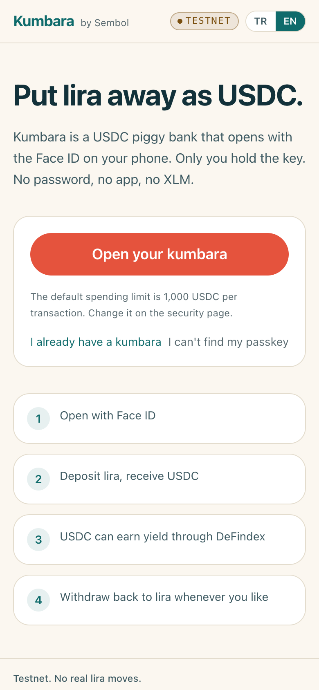
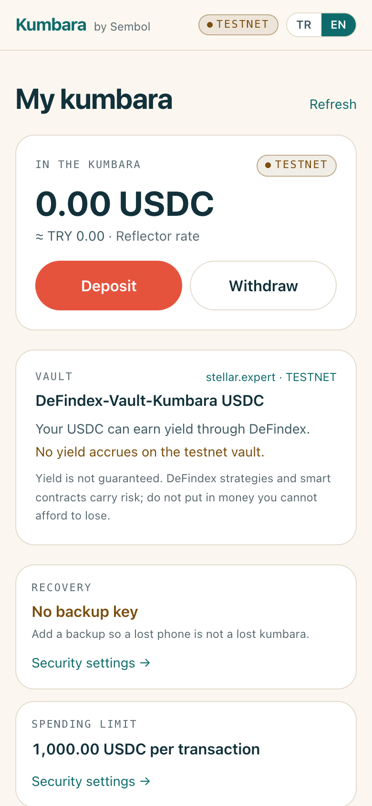
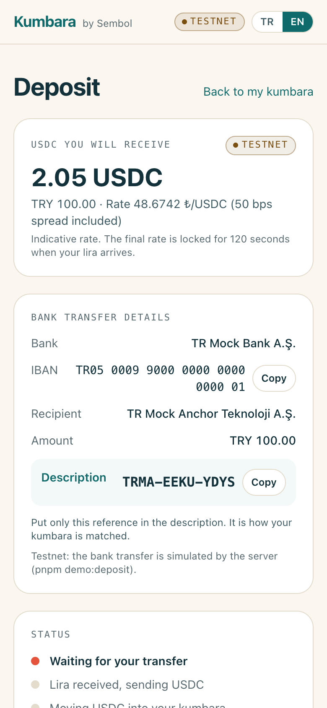
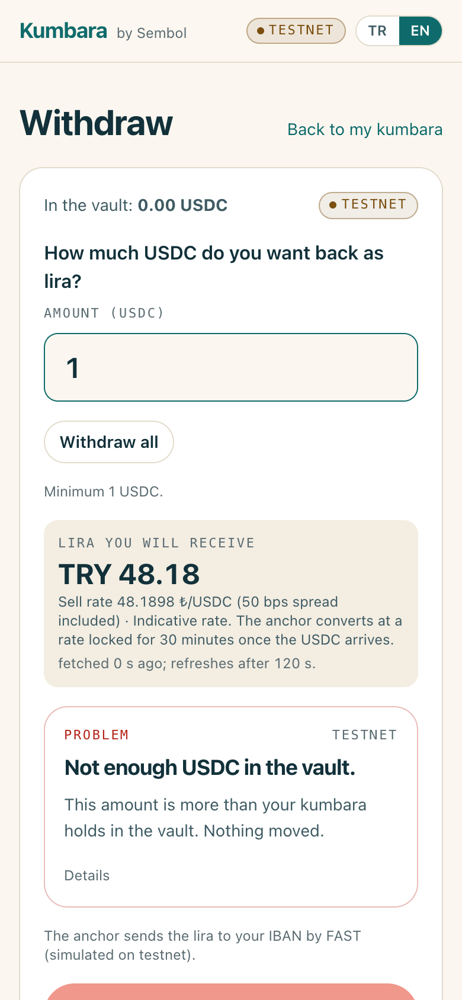
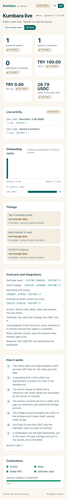

A self-custodial dollar piggy bank for Türkiye, opened with Face ID.
Consumer prices in Türkiye rose 31.51% year on year in August 2026.1 Dollar-denominated saving is how ordinary households defend themselves.
USDC on Stellar settles in seconds for fractions of a cent. Getting there means an extension or app install, twelve words to keep safe, XLM for gas bought somewhere else, and a phone you must never lose.
A bank-transfer habit and a phone with Face ID are what people have. That is the whole interface Kumbara asks for: no seed phrase, no XLM, no install.
1 TÜİK (Turkish Statistical Institute), Tüketici Fiyat Endeksi, Ağustos 2026, news bulletin of 3 September 2026: CPI +31.51% versus August 2025 (monthly +1.84%). Bulletin index: veriportali.tuik.gov.tr; figure as published and as reported by Hürriyet Bigpara, bigpara.hurriyet.com.tr/haberler/emtia-haberleri/agustos-ayi-enflasyonu-belli-oldu_ID102241364.




%%{init: {"theme": "base", "fontFamily": "ui-sans-serif, system-ui, -apple-system, Segoe UI, Roboto, sans-serif", "themeVariables": {"primaryColor": "#f3ede2", "primaryTextColor": "#12313a", "primaryBorderColor": "#e3dccd", "lineColor": "#3f5b63", "actorBkg": "#ffffff", "actorBorder": "#0f6b6b", "actorTextColor": "#12313a", "signalColor": "#3f5b63", "signalTextColor": "#12313a", "noteBkgColor": "#f4e7cf", "noteTextColor": "#7a4f0f", "noteBorderColor": "#e3dccd", "activationBkgColor": "#e3dccd", "sequenceNumberColor": "#ffffff", "fontSize": "18px"}}}%%
sequenceDiagram
autonumber
participant U as User (phone, passkey)
participant K as Kumbara (Next.js)
participant R as Fee-sponsoring relay (OpenZeppelin Channels today)
participant S as Stellar testnet
participant A as TR Mock Anchor
participant V as DeFindex vault
U->>K: Tap "Kumbaranı aç"
K->>U: WebAuthn create (Face ID)
K->>R: { func, auth } deploy smart account (project key, server-side)
R->>S: fee-bumped createContractV2
K->>R: { func, auth } add USDC spending-limit rule (2nd passkey approval)
Note over K,S: Deposit (ONRAMP_MODE=landing)
K->>A: quote (rate locked 120 s) → exact USDC amount
K->>S: sponsor creates ownerless bridge account (trustline, two pre-authorized txs)
K->>A: onramp { quote_id, destination: bridge G… }
A->>S: classic USDC payment to the bridge account
K->>R: pre-authorized forward (SAC transfer bridge → smart account)
K->>R: pre-authorized cleanup (drop trustline, merge to sponsor)
K->>U: passkey approval: vault.deposit(USDC)
K->>R: { func, auth } → V
Note over K,S: Withdraw (OFFRAMP_MODE=landing)
K->>A: offramp → treasury address + memo id
K->>U: passkey approval: vault.withdraw, USDC → bridge account
K->>R: pre-authorized classic payment (treasury, memo id), then cleanup
A->>A: matches memo, simulated FAST payout to IBAN
The anchor's on-ramp rejects a contract (C…) destination and its watcher matches classic payments only: a payout cannot land in a smart account, and a smart account's Soroban transfer is never matched on the way back.
A throwaway classic account whose only valid transactions are signed before it exists: the forward at sequence +1 (USDC to the user's smart account, the exact quoted amount) and the cleanup at sequence +2 (trustline dropped, reserves back to the sponsor). The master key is wiped in-process: no key can sign anything else. In reverse, the same primitive carries withdrawals to the anchor's treasury with the memo id.
| Evidence (Stellar TESTNET, stellar.expert/explorer/testnet/tx/…) | Transaction |
|---|---|
| Anchor pays the bridge account (classic payment) | 778215b3…e3c3a8f1 |
| Pre-authorized forward: USDC lands in the smart account | f580e030…f22c9eab |
| Pre-authorized cleanup: trustline removed, account merged | 6223c61c…7416291d |
Reported to the anchor team with the two fixes that would retire the bridge: SAC delivery to contract wallets and Soroban-aware matching on the way back. Full hashes in docs/anchor-notes.md.
| Building block | What it does in this app | Address (TESTNET, stellar.expert) |
|---|---|---|
| OpenZeppelin smart accounts + spending-limit policy | Every kumbara is an audited smart account whose only signer is the visitor's passkey; a USDC-scoped rule caps 1,000 USDC per transaction on-chain. Via @sembol/passkey-react and stellar/smart-account-kit. | WASM 1b5f4534…97785a · policy CABXBYJN…2TIP5G |
| DeFindex vault + hodl strategy | Deposits go through the vault's real invest path into its strategy and withdrawals unwind from it. The strategy is DeFindex's own hodl crate, built unmodified; no yield on testnet, none promised. | vault CAT76PQM…MKSKL · strategy CDFLOE4H…JLDMQN |
| TR Mock Anchor · SEP-1/6/38 + Partner API | The regulated lira side: IBAN and reference, quotes with a 120 s lock, on-ramps to the bridge account, off-ramps by memo, simulated FAST payouts. Issuer and endpoints read from its stellar.toml. | USDC SAC CBIELTK6…XQDAMA |
| Fee-sponsoring relay (OpenZeppelin Channels today) | Signed authorization entries go to our server route, which adds the project key and forwards to the relay; the visitor never sees XLM. Per-IP and per-booth caps, sponsor threshold. | channels.openzeppelin.com/testnet |
| Reflector | The USD/TRY foreign-exchange oracle behind the lira equivalent on the Savings and stats pages (read by simulation, anchor rate as fallback). | CBKGPWGK…4DXMCJZC (mainnet oracle, read only) |
| Soroswap flagged | Evaluated, not wired: the vault accepts the anchor's USDC directly. The router dry run is recorded for the day a swap is needed. | router CCJUD55A…ZZE7BRD |
Upstream: the fix Sembol needed for passkey signing was merged into stellar/smart-account-kit and shipped in 0.6.2 [PR link].

kumbara.sembol.xyz/stats: headline numbers with a TESTNET badge, live feed, onboarding curve, timings. The since event start / all time toggle counts from 19 September 08:00 and shows all-time until then; seed and E2E accounts are excluded by default.
| On-chain evidence (Stellar TESTNET) | Transaction |
|---|---|
| Vault deployed through the DeFindex factory with the hodl strategy attached | dbf0d5b7…6faa8f96 |
| Deposit with invest=true moved USDC into the strategy (invest) | b615e7dc…76b7f981 |
| Withdrawal unwound the shares from the strategy (divest) | 466f48d2…07a9f5ca |
Recorded fallback demo: docs/demo/round-trip.mp4, the full round trip on production, 2:31 with a caption per step.
Instaward grantee. Author of @sembol/passkey-react, the passkey wallet layer Kumbara runs on; contributor to stellar/smart-account-kit. Built Kumbara end to end for this submission.
github.com/keyboord01
Engineering across the stack; ships the second tenant on the same infrastructure alongside Kumbara.
Deck, booth and visitor wrangling on event days, if confirmed.
Turkish regulatory opinion; licensed-anchor production agreement signed; threat model and monitoring plan for the audit.
Audit of the smart-account, policy and bridge-account path; mainnet behind a capped, presenter-only flag; relay budgets and allowlists.
Public pilot with the licensed anchor on mainnet.
On-chain metric: DeFindex vault NAV from TRY deposits, target [X] USDC.
Native mobile (Expo) SDK for the same passkey wallet layer; second-market groundwork.
The next market needs two things and nothing else: high inflation and an existing licensed Stellar anchor. Same app, same bridge, a different anchor in front.
Integration Track award sized to the four tranches above: [amount], paid in XLM per the SCF schedule (10% acceptance, 20% MVP, 30% testnet, 40% mainnet on the committed metric).